资源
正文
一、模块与组件、模块化与组件化
053 对组件的理解
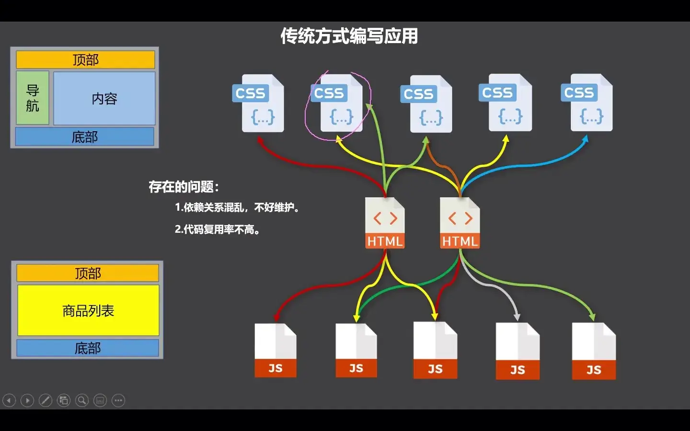
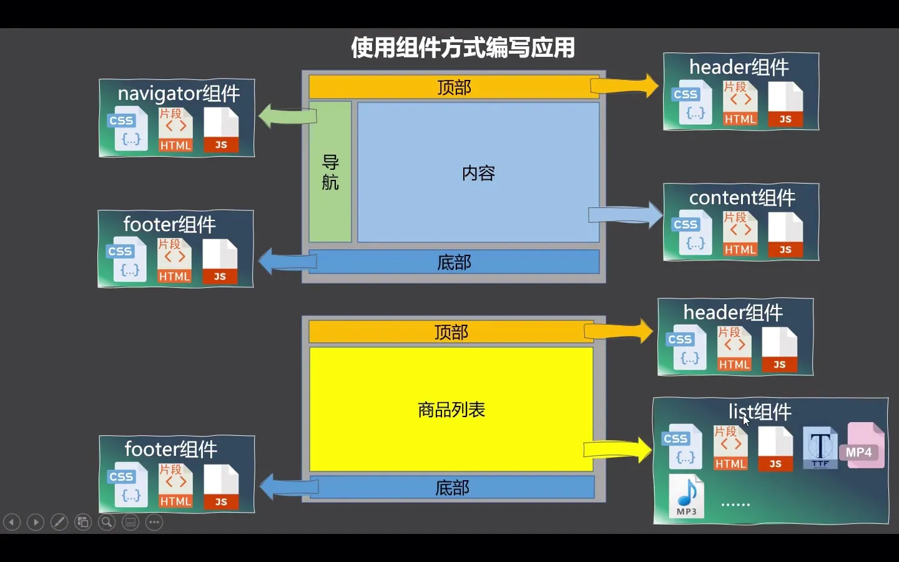
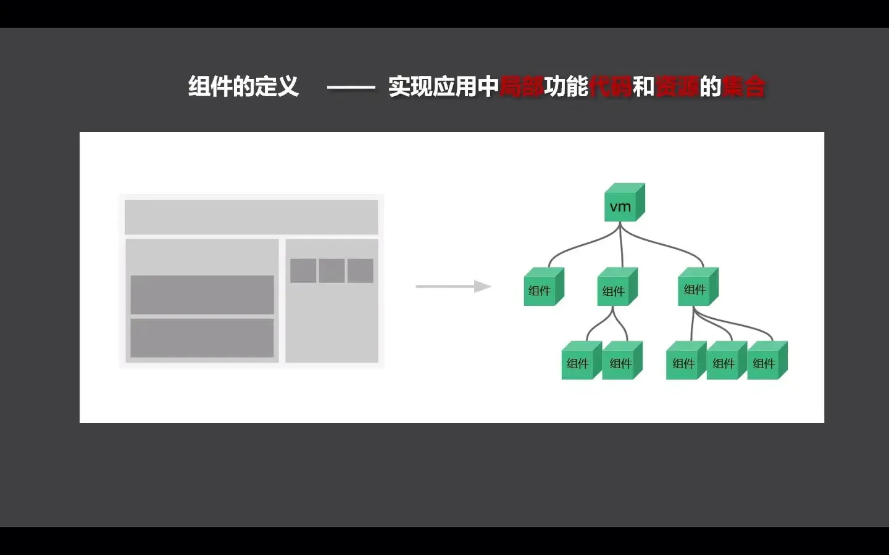
模块
理解：向外提供特定功能的 js 程序，一般就是一个 js 文件
为什么：js 文件很多很复杂
作用：复用 js，简化 js 的编写,提高 js 运行效率
组件
理解：用来实现局部（特定）功能效果的代码集合 (html/css/js/image…)
为什么：一个界面的功能很复杂
作用：复用编码，简化项目编码，提高运行效率
模块化
当应用中的 js 都以模块来编写的，那这个应用就是一个模块化的应用。
组件化
当应用中的功能都是多组件的方式来编写的，那这个应用就是一个组件化的应用。
二、非单文件组件
054 非单文件组件
Vue 中使用组件的三大步骤：
定义组件（创建组件）
注册组件
使用组件（写组件标签）
一、如何定义一个组件?
使用 vue.extend(options) 创建，其中 options 和 new vue(options) 时传入的那个 options 几乎一样，但也有点区别：
区别如下：
el 不要写，为什么?
最终所有的组件都要经过一个 vm 的管理，由 vm 中的 el 决定服务哪个容器。
data 必须写成函数，为什么？
备注：使用 template 可以配置组件结构。
二、如何注册组件？
局部注册：靠 new Vue 的时候传入 components 选项
全局注册：Vue.component('组件名', 组件)
三、编写组件标签:
1 2 3 4 5 6 7 8 9 10 11 12 13 14 15 16 17 18 19 20 21 22 23 24 25 26 27 28 29 30 31 32 33 34 35 36 37 38 39 40 41 42 43 44 45 46 47 48 49 50 51 <div id ="root" > <hello > </hello > <hr > <h1 > {{msg}}</h1 > <school > </school > <hr > <student > </student > </div > <div id ="root2" > <hello > </hello > </div > <script > Vue .config .productionTip = false const school = Vue .extend ({ template : `<div><h1>学校名称：{{name}}</h1><h1>学校地址：{{address}}</h1></div>` , data ( return { name : 'FJNU' , address : 'Fuzhou' } } }) const student = Vue .extend ({ template : `<div><h1>学生名称：{{name}}</h1><h1>学生年龄：{{age}}</h1></div>` , data ( return { name : '古尔丹' , age : 16 } } }) const hello = Vue .extend ({ template : `<h1>你好，旅行者。</h1>` }) Vue .component ('hello' , hello) const vm = new Vue ({ el : '#root' , data : { msg : '你好啊朋友！' }, components : { school, student } }) </script >
055 组件的几个注意点
几个注意点：
关于组件名：
关于组件标签:
第一种写法：<school></school>
第二种写法：<school/>
备注：不用使用脚手架时，<school/> 会导致后续组件不能染
一个简写方式：
const school = Vue.extend(options) 可简写为：const school = options
056 组件的嵌套
建立如下的组件结构：
classDiagram
class Student {
+String name
+int age
+data()
}
class School {
+String name
+String address
+data()
+components: Student
}
class Hello {
+String template
}
class App {
+String template
+components: Hello, School
}
class VueInstance {
+components: App
}
Student --> School : nested
School --> App : used in
Hello --> App : used in
App --> VueInstance : root component
1 2 3 4 5 6 7 8 9 10 11 12 13 14 15 16 17 18 19 20 21 22 23 24 25 26 27 28 29 30 31 32 33 34 35 36 37 38 39 40 41 42 43 44 45 46 47 48 49 50 51 52 53 <div id ="root" > </div > <script > Vue.config.productionTip = false // 阻止 Vue 在启动时生成生产提示。 // 创建组件 const student = Vue.extend({ template: `<div > <h1 > 学生名称： {{name }} </h1 > <h1 > 学生年龄：{{age }} </h1 > </div > `, data() { return { name: '古尔丹', age: 16 } }, }) const school = Vue.extend({ template: `<div > <h1 > 学校名称： {{name }} </h1 > <h1 > 学校地址： {{address }} </h1 > <student > </student > </div > `, data() { return { name: 'FJNU', address: 'Fuzhou' } }, components: { student } }) const hello = Vue.extend({ template: `<h1 > 你好，旅行者。</h1 > ` }) const app = Vue.extend({ template: `<div > <hello /> <school /> </div > `, components: { school, hello } }) // 创建 Vue 实例 const vm = new Vue({ el: '#root', template: `<app /> `, components: { app, } }) </script >
057 VueComponent 构造函数 & 058 Vue 实例与组件实例
关于 VueComponent ：
school 组件本质是一个名为 Vuecomponent 的构造函数 ，且不是程序员定义的，是 Vue.extend 生成的。
我们只需要写 <school/> 或 <school></school>，Vue 解析时会帮我们创建 school 组件的实例对象，即 Vue 帮我们执行的：newVueComponent(options)。
特别注意：每次调用 Vue.extend，返回的都是一个全新的 Vuecomponent！！！
关于 this 指向：
组件配置中：
data 函数、methods 中的函数、watch 中的函数、computed 中的函数 它们的 this 均是 Vuecomponent 实例对象
new Vue(options) 配置中：
data 函数、methods 中的函数、watch 中的函数、computed 中的函数 它们的 this 均是 Vue 实例对象
VueComponent 的实例对象，以后简称 vc（也可称之为：组件实例对象）。
Vue 的实例对象，以后简称 vm。
059 一个重要的内置关系
在 JavaScript 中，"显示原型属性"和"隐式原型属性"是两个不同的概念，涉及到对象的继承和原型链的机制。为了更好地理解这些概念，我们需要先了解原型链以及如何通过原型来实现继承。
1. 隐式原型属性（__proto__）
定义：
隐式原型属性指的是每个 JavaScript 对象内部都有一个隐式的 __proto__ 属性。它指向对象的构造函数的原型对象（即该对象的父类）。
特点：
__proto__ 不是显式声明的，而是 JavaScript 引擎自动添加到每个对象内部的一个隐藏属性。__proto__ 连接对象与其构造函数的原型对象，是实现原型链继承的基础。每个对象都有自己的原型对象，原型对象又有自己的原型，形成原型链。当访问对象的属性或方法时，JavaScript 会沿着原型链查找。
示例：
1 2 3 4 5 6 7 8 9 10 javascriptCopy Codefunction Person (name) {this .name = name;Person .prototype sayHello = function (console .log ('Hello, ' + this .name );const p1 = new Person ('John' );console .log (p1.__proto__ === Person .prototype
在上面的代码中，p1.__proto__ 是 Person.prototype，即 p1 对象的原型。
2. 显示原型属性（prototype）
定义：
显示原型属性是指构造函数（类）的 prototype 属性。每个函数对象都有一个 prototype 属性，这个属性指向构造函数的原型对象。通过 prototype 属性可以定义构造函数实例共享的属性和方法。
特点：
构造函数的 prototype 属性用于定义所有实例对象共享的方法或属性。
当你通过构造函数创建实例时，实例对象会通过 __proto__ 指向构造函数的 prototype。
示例：
1 2 3 4 5 6 7 8 9 10 11 12 javascriptCopy Codefunction Person (name) {this .name = name;Person .prototype sayHello = function (console .log ('Hello, ' + this .name );const p1 = new Person ('John' );const p2 = new Person ('Jane' );sayHello (); sayHello ();
在这个例子中，Person.prototype 是 Person 函数的原型对象，sayHello 方法定义在该原型对象上，p1 和 p2 实例通过 __proto__ 访问到 Person.prototype，从而能够共享该方法。
总结
隐式原型属性（__proto__） ：是每个对象自动拥有的属性 ，指向该对象的构造函数的原型。显示原型属性（prototype） ：是每个构造函数自动拥有的属性 ，指向一个对象，这个对象包含了所有通过该构造函数创建的实例共享的属性和方法。
通过这两种原型属性，JavaScript 实现了基于原型链的继承机制。
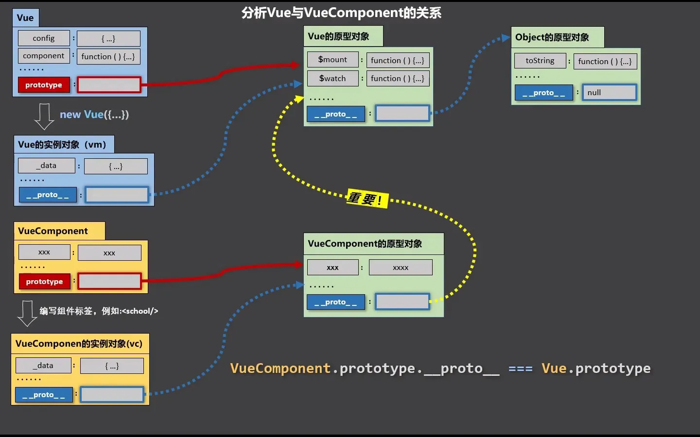
三、单文件组件
060 单文件组件 & 061 创建 Vue 脚手架 & 062 分析脚手架结构
Vue 脚手架是 Vue 官方提供的标准化开发工具（开发平台）。
安装：
创建一个项目（选择 Vue2 ）：
启动服务器：
1 2 cd vue_test
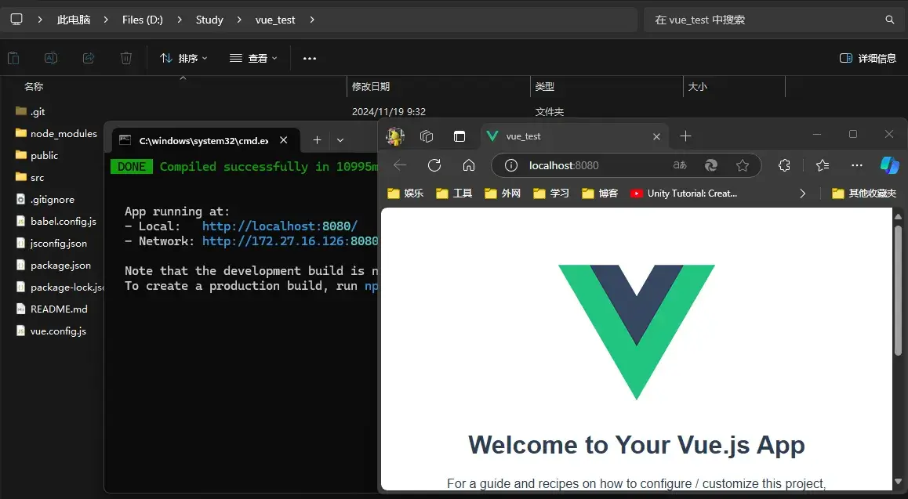
Babel ESLint
Babel 是一个广泛使用的 JavaScript 编译器，主要用于将现代 JavaScript（ES6+）代码转换为向后兼容的版本，以便可以在旧版本的浏览器或环境中运行。它支持的主要功能包括：
语法转换 ：将新版本的 JavaScript 语法（如箭头函数、模块化等）转换为旧版兼容的语法。Polyfills ：通过插件（如 @babel/preset-env 和 core-js），可以添加对新 API（如 Promise、Array.prototype.includes 等）的支持。TypeScript 支持 ：Babel 可以处理 TypeScript 代码，将其编译为纯 JavaScript。React 支持 ：通过 @babel/preset-react，Babel 可以编译 JSX 语法。自定义插件 ：支持通过编写插件来扩展 Babel 的功能。
Babel 通常用于构建工具（如 Webpack、Rollup）中，配合其他工具实现现代开发。
ESLint 是一个 JavaScript 的静态代码分析工具，用于查找代码中的问题，并帮助开发者遵循一致的代码风格。它的主要特点包括：
发现问题 ：可以发现语法错误、潜在问题（如未定义的变量）以及最佳实践建议。代码风格 ：支持检查代码格式（如缩进、引号、分号等），并强制团队遵守一致的代码风格。可定制规则 ：通过配置文件（如 .eslintrc），开发者可以启用或禁用特定规则。插件扩展 ：支持社区插件（如 React、Vue 等插件）来检查特定框架的代码。自动修复 ：ESLint 可以自动修复一些简单的代码问题，例如格式不一致。与编辑器集成 ：通过插件，可以在编辑器（如 VS Code）中实时查看代码问题。
ESLint 通常与 Babel 或 TypeScript 配合使用，在开发和 CI/CD 流程中确保代码质量。
特性
Babel
ESLint
用途 转换代码以支持旧环境
分析代码并强制执行一致性和质量
目标 编译现代 JavaScript 到兼容版本
发现潜在错误和代码风格问题
执行时机 构建时
开发时或代码审查阶段
扩展性 插件和预设支持复杂的语法转换
插件支持多种框架和编码风格检查
总结 ：
Babel 是工具链中的“编译器”，确保代码能在目标环境运行。ESLint 是工具链中的“检查员”，确保代码高质量并易于维护。
VSCode 中按下 Ctrl + ` 键可以打开终端。
调整项目的文件结构：
vue_test
node_modules
public
src
assets
components
App.vue main.js
…
修改文件中的内容：
index.html School.vue Student.vue App.vue main.js
1 2 3 4 5 6 7 8 9 10 11 12 13 14 15 16 17 18 19 20 21 22 23 <!DOCTYPE html > <html lang ="" > <head > <meta charset ="utf-8" > <meta http-equiv ="X-UA-Compatible" content ="IE=edge" > <meta name ="viewport" content ="width=device-width,initial-scale=1.0" > <link rel ="icon" href ="<%= BASE_URL %>favicon.ico" > <title > <%= htmlWebpackPlugin.options.title %></title > </head > <body > <noscript > <strong > We're sorry but <%= htmlWebpackPlugin.options.title %> doesn't work properly without JavaScript enabled. Please enable it to continue.</strong > </noscript > <div id ="app" > </div > </body > </html >
1 2 3 4 5 6 7 8 9 10 11 12 13 14 15 16 17 18 19 20 21 22 23 24 25 26 27 28 29 30 31 <template>
1 2 3 4 5 6 7 8 9 10 11 12 13 14 15 16 17 18 19 <template>
1 2 3 4 5 6 7 8 9 10 11 12 13 14 15 16 17 18 19 20 <template>
1 2 3 4 5 6 7 8 9 10 11 12 13 14 import Vue from 'vue' import App from './App.vue' Vue .config .productionTip = false new Vue ({el : '#app' ,render : h =>h (App ),
执行下列语句编译：
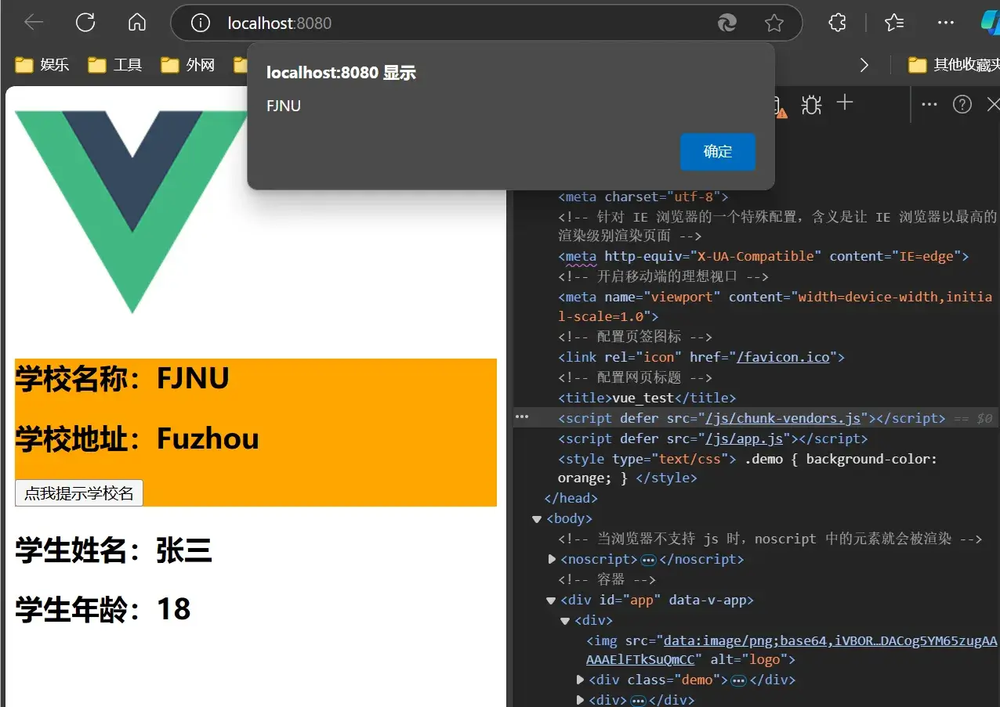
063 render 函数
为什么 main.js 里要用：
1 2 3 4 5 new Vue ({el : '#app' ,render : h =>h (App ),
而不是：
1 2 3 4 new Vue ({el : '#app' ,template : `<app></app>`
？这是因为 main.js 中引用的不是完整版的 Vue。
关于不同版本的 Vue：
vue.js 与 vue.runtime.xxx.js 的区别：
vue.js 是完整版的 Vue，包含：核心功能 + 模板解析器。vue.runtime.xxx.js 是运行版的 Vue，只包含：核心功能；没有模板解析器。
因为 vue.runtime.xxx.js 没有模板解析器，所以不能使用 template 配置项，需要使用 render 函数接收到的 createElement 函数去指定具体内容。
064 修改默认配置
下列命令输出配置文件：
也可通过 vue.config.js 来修改默认配置：
1 2 3 4 5 6 7 8 module .exports = {pages : {index : {entry : 'erc/XXX.js'
065 ref 属性
被用来给元素或子组件注册引用信息（id 的替代者）
应用在 html 标签上获取的是真实 DOM 元素，应用在组件标签上是组件实例对象（vc）
使用方式：
打标识：<h1 ref="xxx">.....</h1> 或 <School ref="xxx"></School>
获取：this.$refs.xxx
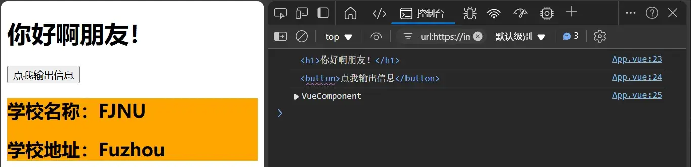
1 2 3 4 5 6 7 8 9 10 11 12 13 14 15 16 17 18 19 20 21 22 23 24 25 26 27 28 29 <template>
066 props 配置
配置项 props：
功能：让组件接收外部传过来的数据
传递数据：
接收数据：
第一种方式（只接收）：
第二种方式（限制类型）：
第三种方式（限制类型、限制必要性、指定默认值）：
1 2 3 4 5 6 7 props : {name : {type : String , required : true , default : '老王'
备注：props 是只读的，Vue 底层会监测你对 props 的修改，如果进行了修改，就会发出警告，若业务需求确实需要修改，那么请复制 props 的内容到 data 中一份，然后去修改 data 中的数据。
App.vue Student.vue
1 2 3 4 5 6 7 8 9 10 11 12 13 14 15 16 17 18 <template>
1 2 3 4 5 6 7 8 9 10 11 12 13 14 15 16 17 18 19 20 21 22 <template>
067 mixin 混入
如果多个 Vue 组件要共用一个属性 ，可以使用 mixin 混入 ，将共用的部分用一个 js 文件存储。
1 2 3 4 5 6 7 8 9 10 export const hunhe = {methods : {showName (alert (this .name )mounted (console .log ('嗬，你好！' )
局部混入
下面使用在 Student.vue 和 School.vue 文件下混入。
App.vue Student.vue School.vue
1 2 3 4 5 6 7 8 9 10 11 12 13 14 15 16 17 18 19 20 <template>
1 2 3 4 5 6 7 8 9 10 11 12 13 14 15 16 17 18 19 20 21 <template>
1 2 3 4 5 6 7 8 9 10 11 12 13 14 15 16 17 18 19 20 21 <template>
全局混入
下面使用在 main.js 文件下混入。
main.js Student.vue School.vue
1 2 3 4 5 6 7 8 9 10 import Vue from 'vue' import App from './App.vue' import { hunhe } from './mixin' Vue .config .productionTip = false Vue .mixin (hunhe)new Vue ({render : h =>h (App ),'#app' )
1 2 3 4 5 6 7 8 9 10 11 12 13 14 15 16 17 18 19 20 <template>
1 2 3 4 5 6 7 8 9 10 11 12 13 14 15 16 17 18 19 20 <template>
068 插件
功能：用于增强 Vue。
本质：包含 install 方法的一个对象，install 的第一个参数是 Vue，第二个以后的参数是插件使用者传递的数据。
定义插件：
1 2 3 4 5 6 7 8 9 10 11 对象.install = function (Vue, options ) {Vue .filter (....)Vue .directive (....)Vue .mixin (....)Vue .prototype $myMethod = function (Vue .prototype $myProperty = xxxx
使用插件：Vue.use()
main.js plugins.js School.vue Student.vue
1 2 3 4 5 6 7 8 9 10 11 12 13 14 15 16 import Vue from 'vue' import App from './App.vue' import plugins from './plugins' Vue .config .productionTip = false Vue .use (plugins, 1 , 2 , 3 )new Vue ({el : '#app' ,render : h =>h (App )
1 2 3 4 5 6 7 8 9 10 11 12 13 14 15 16 17 18 19 20 21 22 23 24 25 26 27 28 29 30 31 32 33 34 35 36 37 38 export default {install (Vue, x, y, z ) {console .log (x, y, z)Vue .filter ('mySlice' , function (value ) {return value.slice (0 , 4 )Vue .directive ('fbind' , {bind (element, binding ) {value = binding.value inserted (element ) {focus ()update (element, binding ) {value = binding.value Vue .mixin ({data (return {x : 100 ,y : 200 Vue .prototype hello = () => { alert ('你好啊' ) }
1 2 3 4 5 6 7 8 9 10 11 12 13 14 15 16 17 18 19 20 21 22 23 24 25 <template>
1 2 3 4 5 6 7 8 9 10 11 12 13 14 15 16 17 18 19 20 <template>
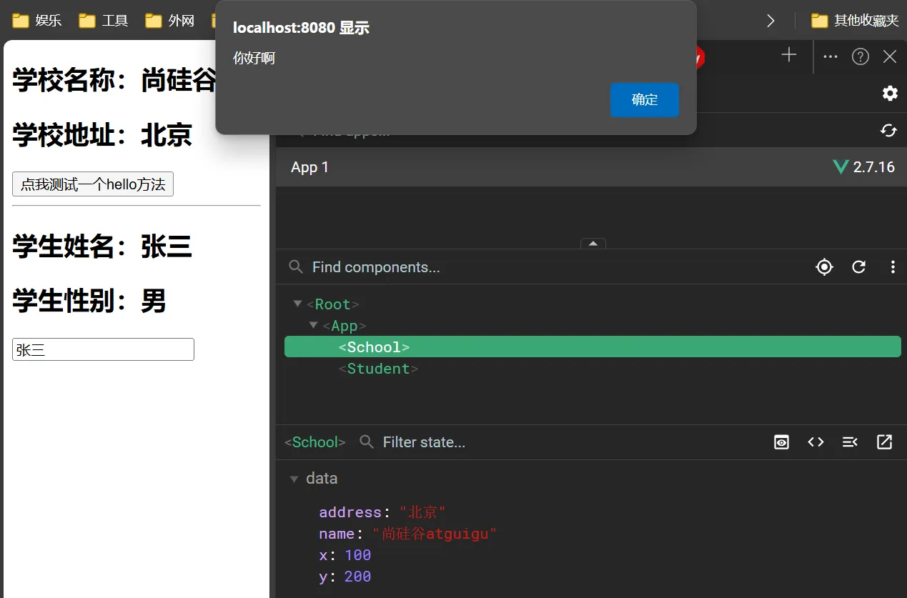
069 scoped 样式
<style lang="less" scoped> 可以设定样式语言为 css，scoped 可以设定样式作用范围在文件内。
main.js School.vue Student.vue
1 2 3 4 5 6 7 8 9 10 11 12 import Vue from 'vue' import App from './App.vue' Vue .config .productionTip = false new Vue ({el : '#app' ,render : h =>h (App )
1 2 3 4 5 6 7 8 9 10 11 12 13 14 15 16 17 18 19 20 21 22 23 24 25 26 27 28 <template>
1 2 3 4 5 6 7 8 9 10 11 12 13 14 15 16 17 18 19 20 21 22 23 24 25 <template>
070-077 TodoList 案例
组件化编码流程
props 适用于：
父组件 ==> 子组件 通信
子组件 ==> 父组件 通信（要求父先给子一个函数）
使用 v-model 时要切记：v-model 绑定的值不能是 props 传过来的值，因为 props 是不可以修改的！
props 传过来的若是对象类型的值，修改对象中的属性时 Vue 不会报错，但不推荐这样做。
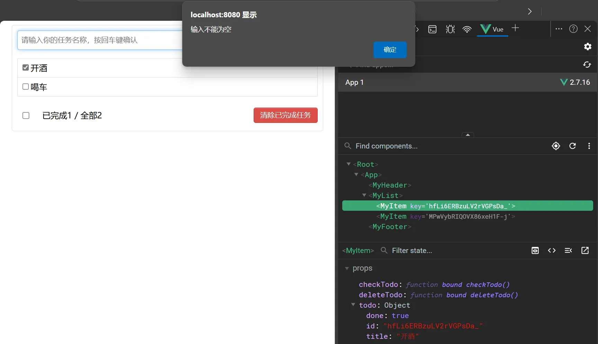
App.vue MyList.vue MyItem.vue MyHeader.vue MyFooter.vue
父组件组织整个 TodoList 的结构。将所有数据存在 data() 中的 todos 中。
处理 todos 的相关函数也在整个父组件中。
1 2 3 4 5 6 7 8 9 10 11 12 13 14 15 16 17 18 19 20 21 22 23 24 25 26 27 28 29 30 31 32 33 34 35 36 37 38 39 40 41 42 43 44 45 46 47 48 49 50 51 52 53 54 55 56 57 58 59 60 61 62 63 64 65 66 67 68 69 70 71 72 73 74 75 76 77 78 79 80 81 82 83 84 85 86 87 88 89 90 91 92 93 94 95 96 97 98 99 100 101 102 103 104 105 106 <template>
1 2 3 4 5 6 7 8 9 10 11 12 13 14 15 16 17 18 19 20 21 22 23 24 25 26 27 28 29 30 31 32 33 34 35 36 <template>
1 2 3 4 5 6 7 8 9 10 11 12 13 14 15 16 17 18 19 20 21 22 23 24 25 26 27 28 29 30 31 32 33 34 35 36 37 38 39 40 41 42 43 44 45 46 47 48 49 50 51 52 53 54 55 56 57 58 59 60 61 62 63 64 65 66 67 68 69 70 71 72 73 74 75 76 77 78 <template>
1 2 3 4 5 6 7 8 9 10 11 12 13 14 15 16 17 18 19 20 21 22 23 24 25 26 27 28 29 30 31 32 33 34 35 36 37 38 39 40 41 42 43 44 45 46 47 48 49 50 <template>
1 2 3 4 5 6 7 8 9 10 11 12 13 14 15 16 17 18 19 20 21 22 23 24 25 26 27 28 29 30 31 32 33 34 35 36 37 38 39 40 41 42 43 44 45 46 47 48 49 50 51 52 53 54 55 56 57 58 59 60 61 62 63 64 65 66 67 68 69 70 71 72 73 74 75 76 77 78 79 80 81 82 83 <template>
graph TD
A[App.vue]
B[MyHeader.vue]
C[MyFooter.vue]
D[MyList.vue]
E[MyItem.vue]
A -->|addTodo| B
A -->|todos, checkAllTodo, clearAllTodo| C
A -->|todos, checkTodo, deleteTodo| D
D -->|todo, checkTodo, deleteTodo| E
078 浏览器本地存储
WebStorage 分为 SessionStorage 和 LocalStorage 。
存储内容大小一般支持 5MB 左右（不同浏览器可能还不一样）
浏览器端通过 Window.sessionStorage 和 Window.localStorage 属性来实现本地存储机制。
相关 API：
xxxxxStorage.setItem("key',"value");
该方法接受一个键和值作为参数，会把键值对添加到存储中，如果键名存在，则更新其对应的值。
xxxxxStorage.getItem("person');
该方法接受一个键名作为参数，返回键名对应的值。
xxxxxStorage.removeItem('key");
该方法接受一个键名作为参数，并把该键名从存储中删除。
xxxxxStorage.clear();
该方法会清空存储中的所有数据。
备注：
SesslonStorage 存储的内容会随着浏览器窗口关闭而消失 。Localstorage 存储的内容，需要手动清除才会消失 。xxxxxstorage.getItem(xxx) 如果 xxx 对应的 value 获取不到，那么 getltem 的返回值是 null。JSON.parse(null) 的结果依然是 null。
方法 说明
setItem(key, value)保存一对键值对数据。值会被转换为字符串存储。
getItem(key)获取指定键的值。如果键不存在，返回 null。
removeItem(key)删除指定键的键值对。
clear()清空存储中的所有数据。
key(index)根据索引获取存储中的键名。索引从 0 开始。如果索引超出范围，返回 null。
length返回存储中键值对的数量（作为属性，而非方法）。
079 TodoList 本地存储
在 070-077 的 TodoList 案例下的 App.vue，给 todos 修改 data()（读取 localStorage 载入到 todos 中）和 watch（深度监视，修改 todos 的值时同时修改 localStorage 里的值）。
1 2 3 4 5 6 7 8 9 10 11 12 13 14 15 16 17 18 19 20 21 22 23 24 25 26 27 import MyHeader from './components/MyHeader' import MyList from './components/MyList' import MyFooter from './components/MyFooter.vue' export default {name : 'App' ,components : { MyHeader , MyList , MyFooter },data (return {todos : JSON .parse (localStorage .getItem ('todos' )) || []methods : {watch : {todos : {handler (value ) {console .log ('todos' );localStorage .setItem ('todos' , JSON .stringify (value));deep : true
080-082 组件自定义事件-绑定-解绑-总结
组件的自定义事件：
一种组件间通信的方式，适用于：子组件 =>父组件
使用场景：A 是父组件，B 是子组件，B 想给 A 传数据，那么就要在 A 中给 B 绑定自定义事件（事件的回调在 A 中）
绑定自定义事件：
触发 自定义事件：this.$emit('atguigu', 数据)
解绑 自定义事件：this.$off('atguigu')
组件上也可以绑定原生 DOM 事件，需要使用 native 修饰符
注意：通过 this.\$refs.x.\$on('atguigu', 回调) 绑定自定义事件时，回调要么配置在 methods 中，要么用箭头函数 ，否则 this 指向会出问题！
App.vue School.vue Student.vue
1 2 3 4 5 6 7 8 9 10 11 12 13 14 15 16 17 18 19 20 21 22 23 24 25 26 27 28 29 30 31 32 33 34 35 36 37 38 39 40 41 42 43 44 45 46 47 48 49 50 51 52 53 <template>
1 2 3 4 5 6 7 8 9 10 11 12 13 14 15 16 17 18 19 20 21 22 23 24 25 26 27 28 29 30 31 32 33 <template>
1 2 3 4 5 6 7 8 9 10 11 12 13 14 15 16 17 18 19 20 21 22 23 24 25 26 27 28 29 30 31 32 33 34 35 36 37 38 39 40 41 42 43 44 45 46 47 48 49 50 51 52 53 54 55 56 <template>
083 TodoList 案例-自定义事件
对于子对象向父对象通过调用函数传递数据，不再使用 props，而是使用 this.$emit()（以触发自定义事件）。
graph TD
A[App.vue]
B[MyHeader.vue]
C[MyFooter.vue]
D[MyList.vue]
E[MyItem.vue]
A -->|addTodo| B
C -->|checkAllTodo, clearAllTodo| A
A -->|todos| C
A -->|todos| D
D -->|checkTodo, deleteTodo| A
D -->|todo, checkTodo, deleteTodo| E
父对象不再写成 :checkAllTodo="checkAllTodo" 的形式，而是改为 @checkAllTodo="checkAllTodo"（以绑定自定义事件）。
App.vue MyHeader.vue MyFooter.vue MyList.vue MyItem.vue
1 2 3 4 5 6 7 8 9 10 11 12 13 14 15 16 17 18 19 20 21 22 23 24 25 26 27 28 29 30 31 32 33 34 35 36 37 38 39 40 41 42 43 44 45 46 47 48 49 50 51 52 53 54 55 56 57 58 59 60 61 62 63 64 65 66 67 68 69 70 71 72 73 74 75 76 77 78 79 80 81 82 83 84 85 86 87 88 89 90 91 92 93 94 95 96 97 98 99 100 101 102 103 104 105 106 <template>
1 2 3 4 5 6 7 8 9 10 11 12 13 14 15 16 17 18 19 20 21 22 23 24 25 26 27 28 29 30 31 32 33 34 35 36 37 38 39 40 41 42 43 44 45 46 47 48 49 <template>
1 2 3 4 5 6 7 8 9 10 11 12 13 14 15 16 17 18 19 20 21 22 23 24 25 26 27 28 29 30 31 32 33 34 35 36 37 38 39 40 41 42 43 44 45 46 47 48 49 50 51 52 53 54 55 56 57 58 59 60 61 62 63 64 65 66 67 68 69 70 71 72 73 74 75 76 77 78 79 80 81 82 83 84 85 <template>
1 2 3 4 5 6 7 8 9 10 11 12 13 14 15 16 17 18 19 20 21 22 23 24 25 26 27 28 29 30 31 32 33 34 35 36 <template>
1 2 3 4 5 6 7 8 9 10 11 12 13 14 15 16 17 18 19 20 21 22 23 24 25 26 27 28 29 30 31 32 33 34 35 36 37 38 39 40 41 42 43 44 45 46 47 48 49 50 51 52 53 54 55 56 57 58 59 60 61 62 63 64 65 66 67 68 69 70 71 72 73 74 75 76 77 78 <template>
084-085 全局事件总线
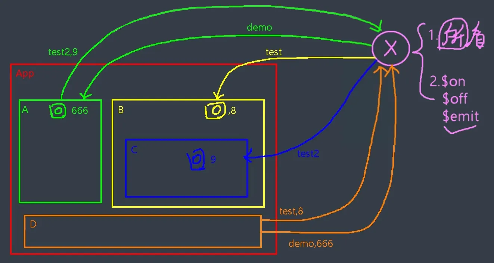
上图展示了全局事件总线（X）的示意图，从而实现各个组件间相互通信。X 应满足：
所有组件都能访问到
支持：$on、$off、$emit
main.js App.vue School.vue Student.vue
1 2 3 4 5 6 7 8 9 10 11 12 13 14 15 import Vue from 'vue' import App from './App.vue' Vue .config .productionTip = false new Vue ({el : '#app' ,render : h =>h (App ),beforeCreate (Vue .prototype $bus = this ;
1 2 3 4 5 6 7 8 9 10 11 12 13 14 15 16 17 18 19 20 <template>
1 2 3 4 5 6 7 8 9 10 11 12 13 14 15 16 17 18 19 20 21 22 23 24 25 26 27 28 29 30 31 32 33 34 <template>
1 2 3 4 5 6 7 8 9 10 11 12 13 14 15 16 17 18 19 20 21 22 23 24 25 26 27 28 29 30 31 32 <template>
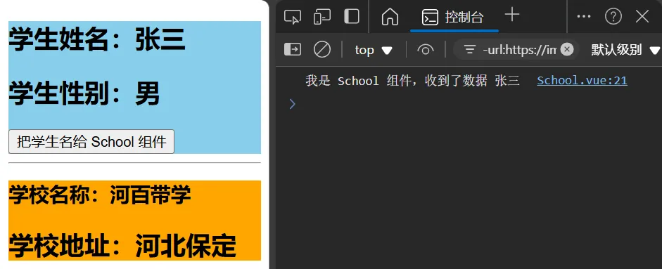
全局事件总线（GlobalEventBus）
一种组件间通信的方式，适用于任意组件间通信。
安装全局事件总线：
1 2 3 4 5 6 7 new Vue ({beforeCreate (Vue .prototype $bus =this
使用事件总线：
最好在 beforeDestroy() 钩子中，用 $off 去解绑当前组件所用到的事件。
086 TodoList 案例-事件总线
对于父传子：props，对于子传父：自定义事件。其余情况，可使用全局事件总线。
这里将 TodoList 案例添加事件总线，实现 App.vue 和 MyItem.vue 间的消息传递。
graph TD
A[App.vue]
B[MyHeader.vue]
C[MyFooter.vue]
D[MyList.vue]
E[MyItem.vue]
F[$bus]
A -->|addTodo| B
F -->|checkTodo, deleteTodo| A
C -->|checkAllTodo, clearAllTodo| A
A -->|todos| C
A -->|todos| D
D -->|checkTodo, deleteTodo| A
E -->|checkTodo, deleteTodo| F
D -->|todo| E
main.js App.vue MyItem.vue
1 2 3 4 5 6 7 8 9 10 11 12 13 14 15 import Vue from 'vue' import App from './App.vue' Vue .config .productionTip = false new Vue ({el : '#app' ,render : h =>h (App ),beforeCreate (Vue .prototype $bus = this ;
1 2 3 4 5 6 7 8 9 10 11 12 13 14 15 16 17 18 19 20 21 22 23 24 25 26 27 28 29 30 31 32 <template>
1 2 3 4 5 6 7 8 9 10 11 12 13 14 15 16 17 18 19 20 21 22 23 24 25 26 27 28 29 30 31 32 33 34 35 36 37 <template>
087 消息订阅与发布-pubsub
与现实生活类比：
消息订阅与发布
订阅消息：消息名
发布消息：消息内容
报纸订阅与发布
订阅报纸：住址
邮递员送报纸：报纸
这一设计思想是原生 JS 所没有的，需要借助第三方库 pubsub-js 。
School.vue Student.vue
1 2 3 4 5 6 7 8 9 10 11 12 13 14 15 16 17 18 19 20 21 22 23 24 25 26 27 28 29 30 31 32 33 34 35 36 37 38 39 40 <template>
1 2 3 4 5 6 7 8 9 10 11 12 13 14 15 16 17 18 19 20 21 22 23 24 25 26 27 28 29 30 31 32 <template>
原课程说全局事件总线更好（同样能够实现任意组件间通信），因为 Vue 自带。
消息订阅与发布（pubsub）
一种组件间通信的方式，适用于任意组件间通信 。
使用步骤：
安装 pubsub：npm i pubsub-js
引入：import pubsub from 'pubsub-js'
接收数据（需要数据的地方订阅数据）：A 组件想接收数据，则在 A 组件中订阅消息，订阅的回调留在 A 组件自身 。
1 2 3 4 5 6 7 methods (fdemo (data ){......}mounted (this .pid = pubsub.subscribe ('xxx' ,this .demo )
提供数据：pubsub.publish('xxx', 数据)
最好在 beforeDestroy 钩子中，用 pubsub.unsubscribe(pid) 去取消订阅 。
088 TodoList 案例-pubsub
App.vue MyItem.vue
1 2 3 4 5 6 7 8 9 10 11 12 13 14 15 16 17 18 19 20 21 22 23 24 25 26 27 28 29 30 31 32 33 34 35 36 37 38 39 40 41 42 43 44 45 46 47 48 49 50 51 52 53 54 55 56 57 <script>
1 2 3 4 5 6 7 8 9 10 11 12 13 14 15 16 17 18 19 20 21 22 23 24 25 <script>
089 TodoList 案例-编辑
App.vue MyItem.vue
1 2 3 4 5 6 7 8 9 10 11 12 13 14 15 16 17 18 19 20 21 22 23 24 25 26 27 28 29 30 31 32 33 34 35 36 37 38 39 40 41 42 43 44 45 46 47 48 49 50 51 52 53 54 55 56 57 58 59 60 61 62 63 64 65 66 67 68 69 70 71 72 73 74 75 76 77 78 79 80 81 82 83 84 85 86 87 88 89 90 91 92 93 94 95 96 97 98 99 100 101 102 103 104 105 106 107 108 109 110 111 112 113 114 115 116 117 118 119 120 121 122 123 124 125 126 127 128 129 130 <template>
1 2 3 4 5 6 7 8 9 10 11 12 13 14 15 16 17 18 19 20 21 22 23 24 25 26 27 28 29 30 31 32 33 34 35 36 37 38 39 40 41 42 43 44 45 46 47 48 49 50 51 52 53 54 55 56 57 58 59 60 61 62 63 64 65 66 67 68 69 70 71 72 73 74 75 76 77 78 79 80 81 82 83 84 85 86 <template>
执行后点击编辑按钮并不会立即获取焦点，这会导致必须获取焦点后才可以关闭输入框，这个问题留到下一节去解决。
090 $nextTick
语法：this.$nextTick(回调函数)
作用：在下一次 DOM 更新结束后执行其指定的回调。
什么时候用：当改变数据后，要基于更新后的新 DOM 进行某些操作时，要在 nextTick 所指定的回调函数中执行。
MyItem.vue 下，使用 ref 获取输入框并更改焦点：
1 2 3 4 5 6 7 8 9 10 11 12 13 14 15 16 17 18 19 20 21 22 23 24 25 26 27 28 29 30 31 32 33 34 35 36 37 38 39 40 41 42 43 44 45 46 47 48 49 <template>
091 动画效果
1 2 3 4 5 6 7 8 9 10 11 12 13 14 15 16 17 18 19 20 21 22 23 24 25 26 27 28 29 30 31 32 33 34 35 36 37 38 39 40 41 42 <template>
092 过渡效果
1 2 3 4 5 6 7 8 9 10 11 12 13 14 15 16 17 18 19 20 21 22 23 24 25 26 27 28 29 30 31 32 33 34 35 36 37 <template>
093 多个元素过渡
1 2 3 4 5 6 7 8 9 10 11 12 13 14 15 16 17 18 19 20 21 22 23 24 25 26 27 28 29 30 31 32 33 34 35 36 37 38 <template>
094 集成第三方动画
使用它！
1 2 3 4 5 6 7 8 9 10 11 12 13 14 15 16 17 18 19 20 21 22 23 24 25 26 27 28 29 <template>
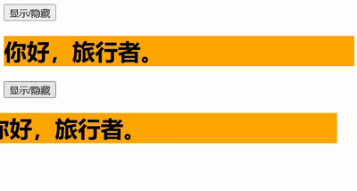
095 总结过渡与动画
作用：在插入、更新或移除 DOM 元素时，在合适的时候给元素添加样式类名。
图示：
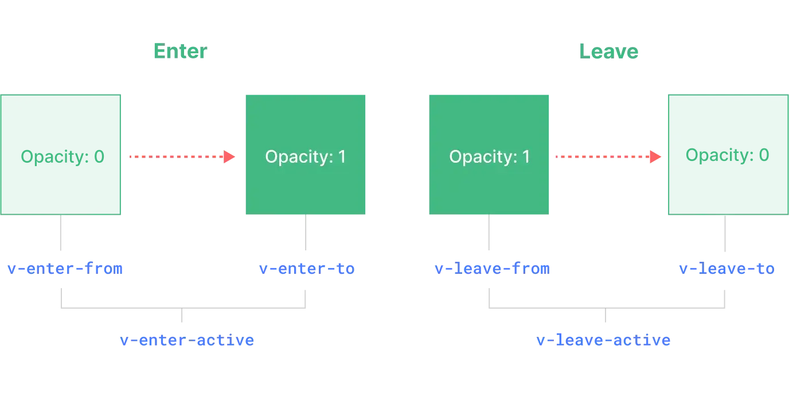
写法：
备注：若有多个元素需要过度，则需要使用：<transition-group>，且每个元素都要指定 key 值。